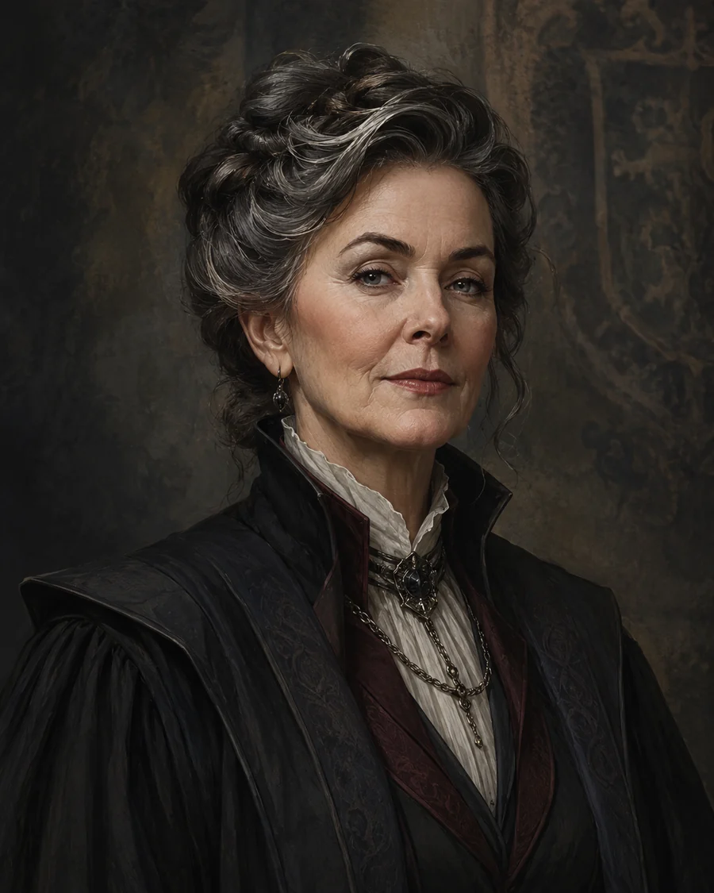

Ředitelka školy
Mafalda Robertsová
V ředitelně je ticho, jen hodiny odměřují čas a staré knihy šustí v průvanu. Na stole leží pečetidlo školy a seznam aktuálních studentských záležitostí.

Ředitelka školy
V ředitelně je ticho, jen hodiny odměřují čas a staré knihy šustí v průvanu. Na stole leží pečetidlo školy a seznam aktuálních studentských záležitostí.